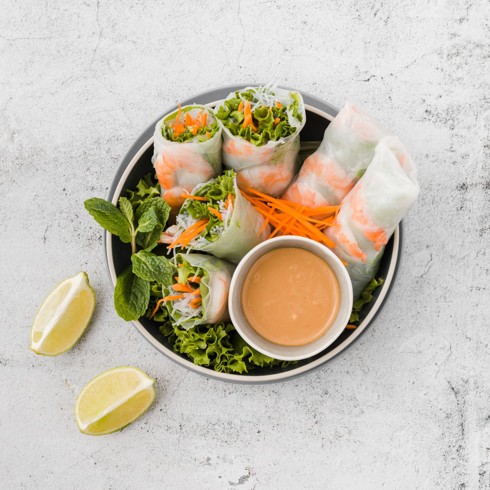

About 3F
Welcome to our food blog where we celebrate the simple joys of life: food, family, and friends.
-min.jpg)
Our blog is dedicated to bringing you homemade recipes that are delicious, easy to make, and perfect for sharing with loved ones.
We believe that cooking and baking from scratch is not only a satisfying and rewarding experience, but also a way to connect with others and create lasting memories.

From classic comfort foods to international flavors, we're passionate about exploring different cuisines and techniques, and sharing our favorite recipes with you.
So, come join us on our culinary journey and discover the joy of homemade cooking.